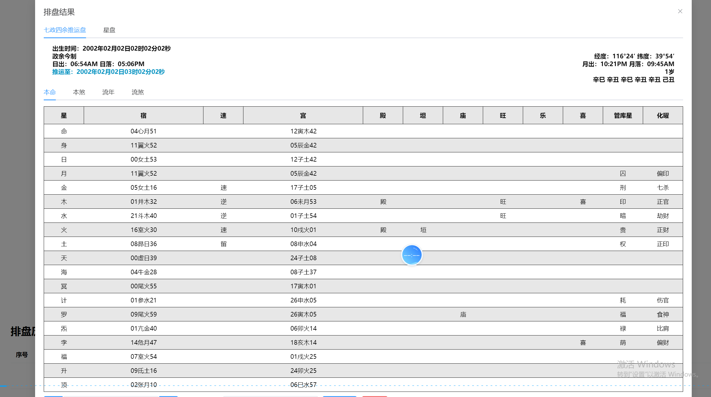
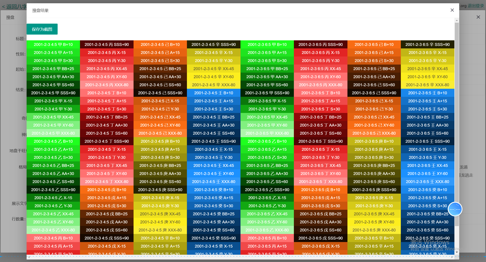

I CHING · BAZI · COMPLETE SOURCE
周易八字排盘完整源码
面向八字排盘、五行分析、大六壬、七政四余和传统文化应用的完整源码项目，适合产品展示、技术评估、二次开发和私有化部署。
核心能力
八字排盘
支持排盘、基础命理信息展示和传统文化应用场景。
术数分析
覆盖大六壬、七政四余、流年分析和五行关系展示。
阅读与下载
可通过 GitHub README 阅读项目介绍，并通过 Code 按钮下载源码包。
产品截图






部署与收录
GitHub Pages 推荐使用 Deploy from a branch，Branch 选择 main，Folder 选择 /docs。页面发布后，可将 sitemap.xml 提交到 Google Search Console 和 Bing Webmaster Tools。